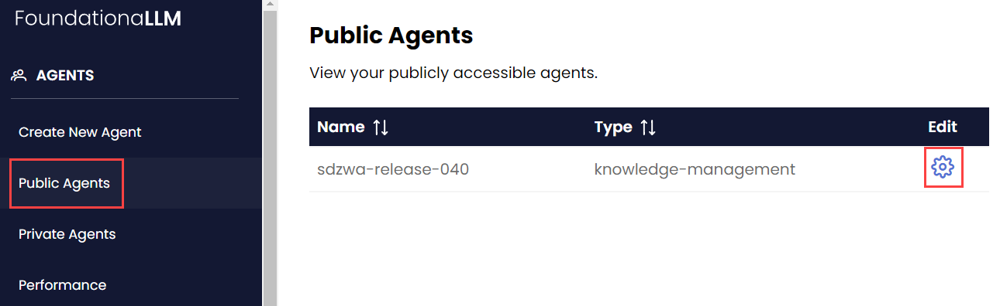

Management UI
The Management UI enables FLLM administrators to configure agents without directly calling the Management API.
Creating New Agent
Navigate to the Create New Agent page using the side navigation bar.

Set the agent type: Knowledge Management or Analytics. FoundationaLLM currently only supports Knowledge Management agents.

Set the agent Knowledge Source:

Expand the dropdown arrow next to the upper left box. Select the correct Content Source Profile.

Expand the dropdown arrow next to the upper right box to open the Indexing Profile dropdown. Select the correct Indexing Profile.

Expand the dropdown arrow next to the lower left box. Set the Chunk size and Overlap size settings for text partitioning. Select Done.

Expand the dropdown arrow next to the lower right box. Set the trigger Frequency; FoundationaLLM currently only supports Manual triggers.

Configure user-agent interactions.

Enable conversation history using the
Yes/NoRadio Button. Select Done.
Configure the Gatekeeper. Then, select Done.
Enable/Disablethe Gatekeeper using the Radio Button- Set the Content Safety platform to either
NoneorAzure Content Safetyusing the dropdown menu - Set the Data Protection platform to either
NoneorMicrosoft Presidiousing the dropdown menu

Lastly, set the System Prompt. The prompt prefixes users' requests to the agent, influencing the tone and functionality of the agent.

After setting the desired agent configuration, select Create Agent at the bottom right-hand corner of the page. You will be able to edit the agent configuration after creation from the Public Agents page.
